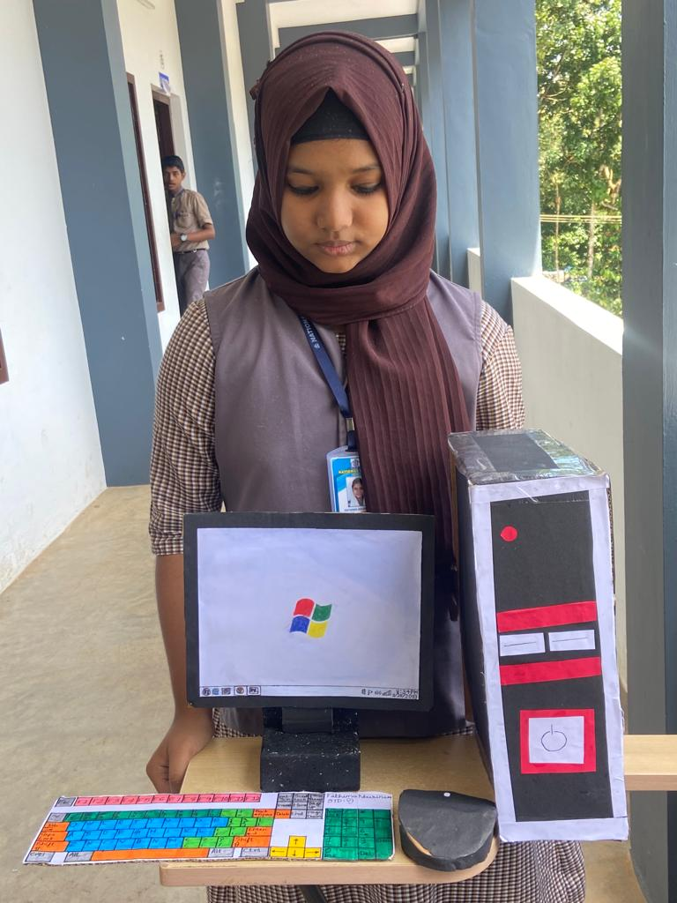
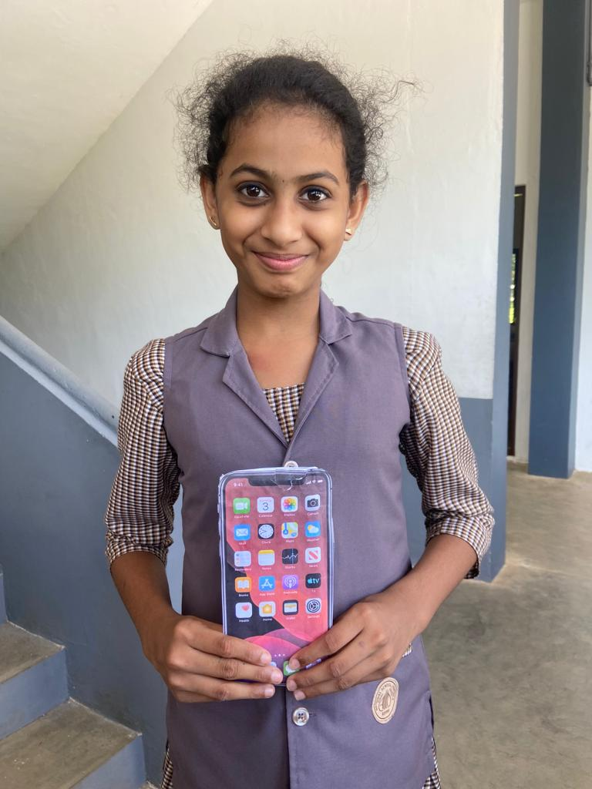
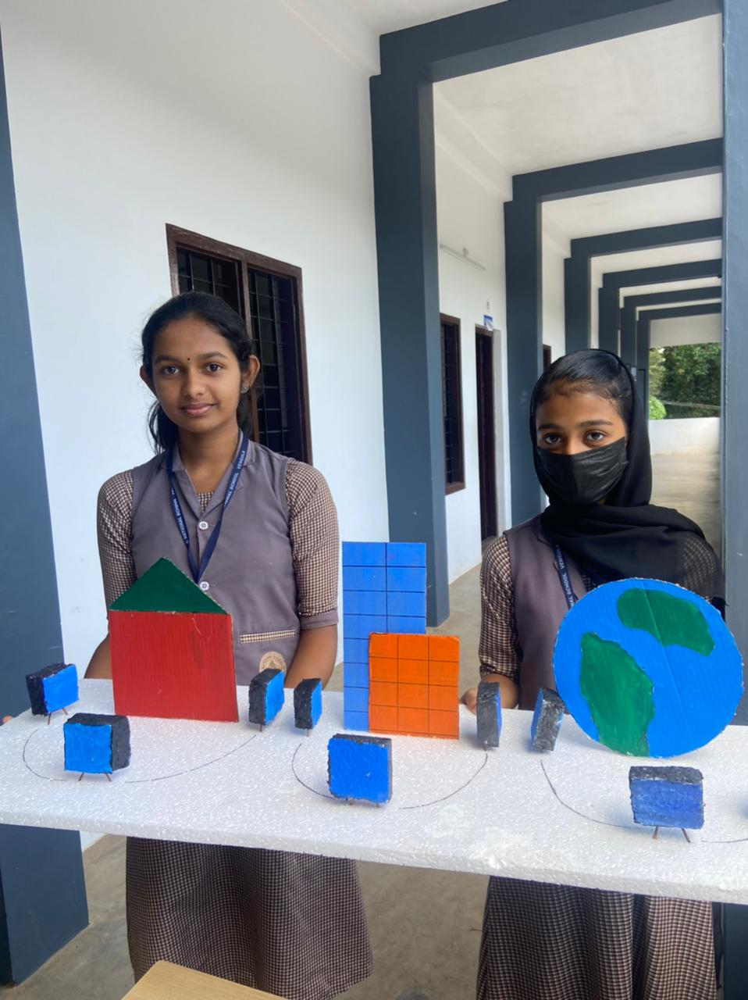
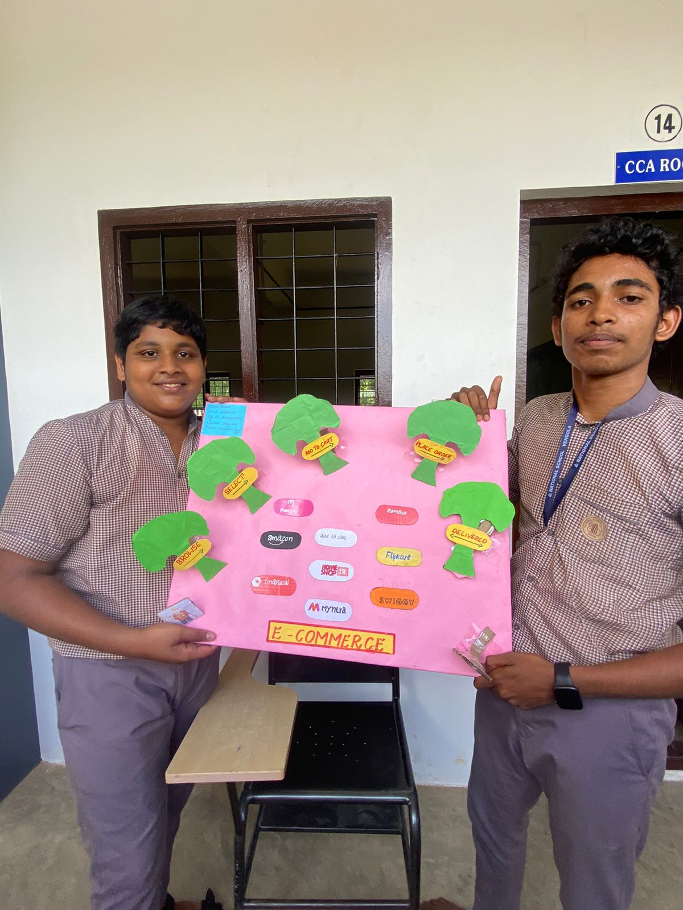
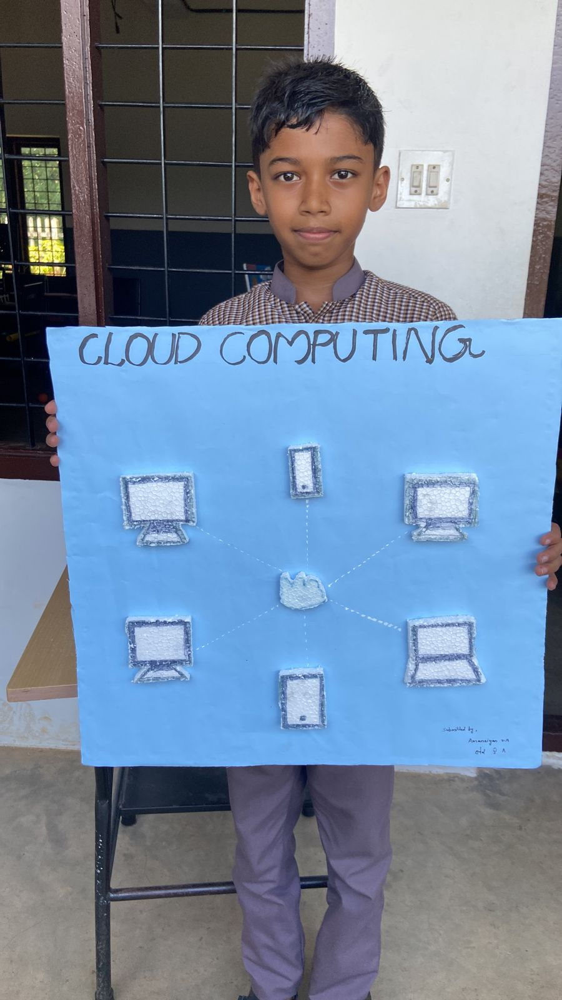
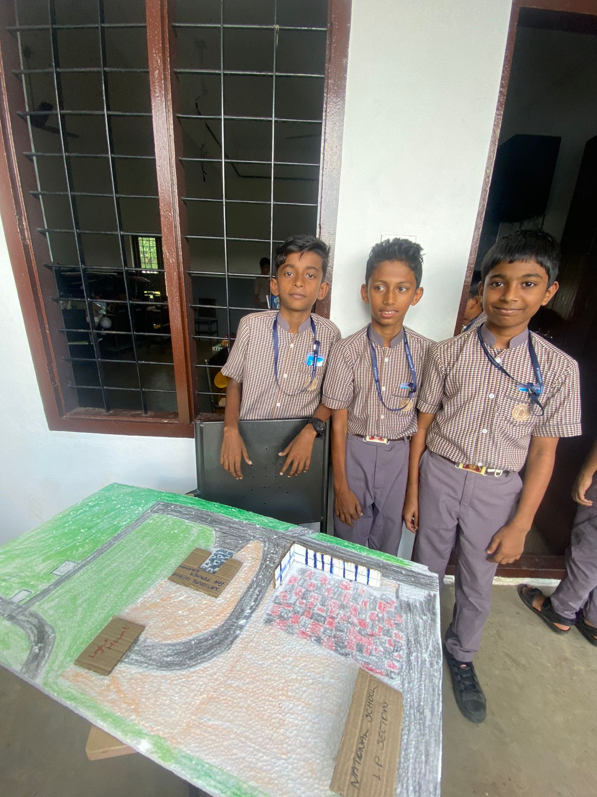

Today we do not need to go any further than our own home or even room, to see some form of ICT in our lives. Whether it be a computer, plasma TV, or mobile phone, we all have them in some part of our lives. In today’s society, people as consumers of ICT, all strive for the one dream – the dream of a connected life. This makes ICT a lifestyle choice for much of the population. In addition, this lifestyle choice is changing the way we communicate, increasing the rate of consumerism, and changing how we interact and gather information. ICT has invaded and transformed many aspects of our lives to the extent that we live in an environment that is dominated by technology which itself is consumer-driven. No matter how we perceive its presence, there is no denying that it is an important part of our lives and that it is here to stay.Technology provides students with easy-to-access information, accelerated learning, and fun opportunities to practice what they learn. It enables students to explore new subjects and deepen their understanding of difficult concepts, particularly in STEM.
     